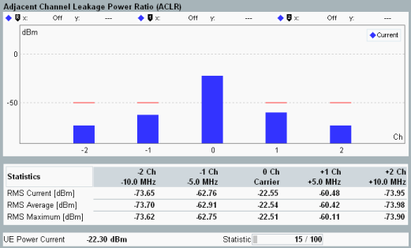

The ACLR results are measured in the preselected slot. The results are displayed in a bar graph and as a table of statistical results.

The method of measurement ensures that the results correspond to the ACLR specified in 3GPP TS 34.121 where a WCDMA channel filter is used. According to the specification, ACLR tests must be carried out at maximum output power of the UE.
The central bar shows the power at the nominal UL carrier frequency. Either the "Current", "Average" or "Maximum" values can be displayed in the bar graph. The table below the bar graph provides all these values.
- In the configuration with single uplink carrier, the bars ±1 correspond:
– To the first adjacent channels (±5 MHz from the UL frequency) and – The second adjacent channels (±10 MHz from the UL frequency). - In the configuration with dual uplink carrier,
– The 1st adjacent channels are ±7.5 MHz from the center carrier frequency and – The 2nd adjacent channels are ±12.5 MHz from the center carrier frequency.
The center carrier frequency is in the middle between the carrier one and the carrier two displayed as "Carrier Sum". Also the values measured at the center frequencies of carrier one and carrier two are displayed.
The adjacent channel powers can be displayed as relative power levels (dB) referenced to the carrier power or as absolute power levels (dBm). The absolute power levels are derived from the relative power levels via a conversion procedure. For current values, the conversion is based on the current carrier power. For average and maximum values, it is based on the average carrier power.
For additional information, refer to "Common View Elements".